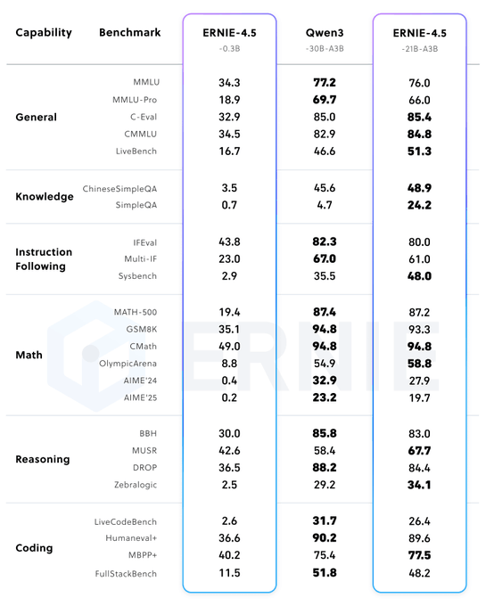
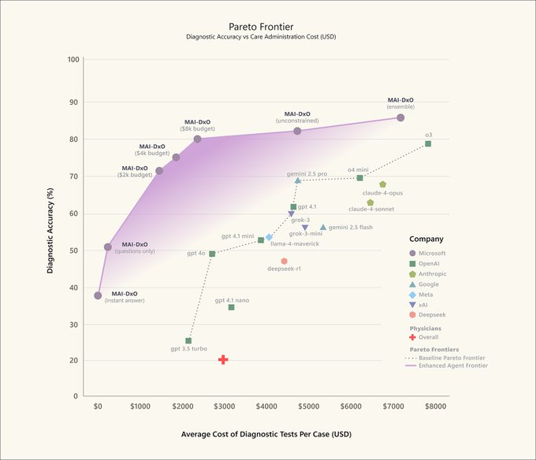

Week 27, 2025
ERNIE 4.5
Baidu ERNIE 4.5 VLMs and LLMs beats DeepSeek v3, Qwen 235B and competitive to OpenAI O1 (for VLM) - Apache 2.0 licensed.
The 21B A3B is 30% less than Qwen3 30B A3B and better on most benchmarks.

MAI-DxO
SDBench introduces a new benchmark that transforms 304 NEJM cases into interactive diagnostic simulations. AI must ask questions, order tests, and weigh costs, mirroring the complexity of real clinical decision-making.
MAI-DxO is a model-agnostic orchestrator that simulates a panel of virtual physicians. It achieves 85.5% diagnostic accuracy—four times that of experienced doctors—while cutting diagnostic costs.
Together, these advances offer a blueprint for how AI can help deliver precision and efficiency in healthcare, and we're looking forward to working with healthcare partners and the entire ecosystem on these advances making a difference.
